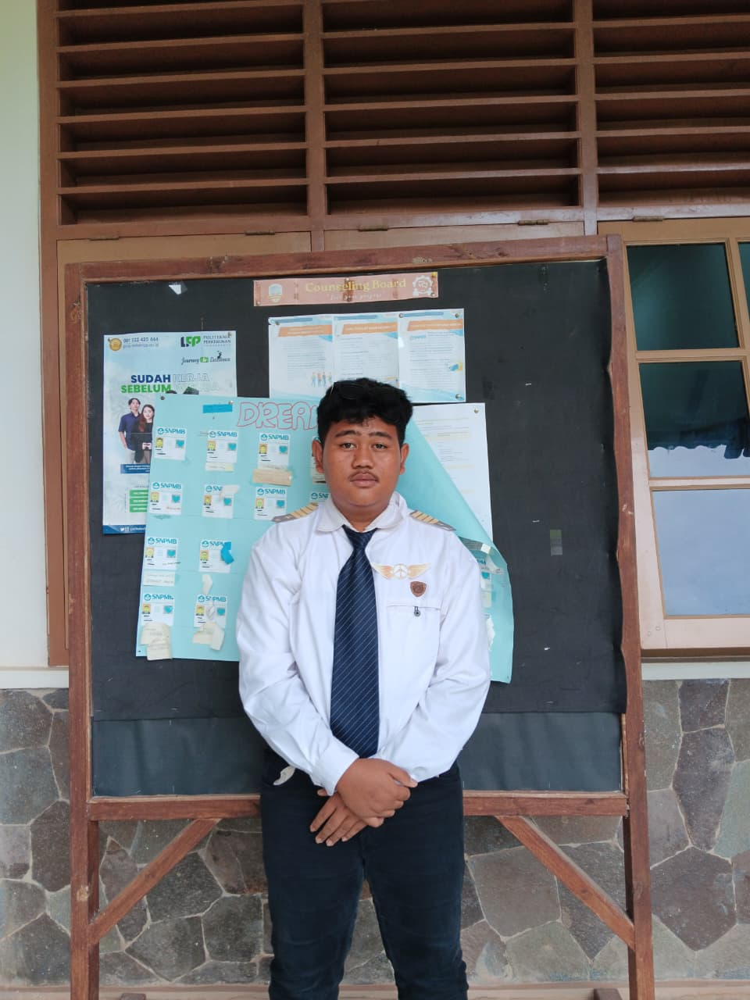

Untuk informasi lebih lanjut, kunjungi halaman Wikipedia tentang Riyan Andika Pratama .
| Nama Lengkap | Riyan Andika Pratama |
|---|---|
| Tanggal Lahir | 24 Agustus 2006 |
| Tempat Lahir | Padang Ratu |
| @username_ig | |
| Riwayat Sekolah |
|
📸 Instagram: @elk.8713284_iG
📸 PENCAPAIAN: PECAPAIAN KU
Perkenalkan, nama saya Riyan Andika Pratama. Saya biasa dipanggil Riyan atau Madongsek. Saya berasal dari keluarga Lampung dan memiliki dua saudara. Saat ini, saya tinggal di Gunung Madu.
Bagi saya, hidup bukan sekadar tentang hasil, melainkan tentang perjalanan, perjuangan, serta pengalaman yang membentuk diri menjadi lebih kuat dan dewasa.